完整文案載入中……
00
文學命題，不取代證據
不是觀看悲傷，
而是辨認門為何沒有更早打開。
案件紀錄、司法認定、公開報導與文學重構分層呈現。動畫只在相關段落出現，所有讀者都能略過劇場，直接閱讀正文與來源。
「 今日所讀，是一個仍然有人愛著的孩子，如何在大人各自完整的理由之間，失去他本來應有的明天。
READING MAP · 閱讀地圖
先看日期，再讀制度；
先辨來源，再形成判斷。
不必一次看完全部動畫。四條路徑都能獨立抵達正文、查證與求助資訊。
先辨識材料，再進入故事
文學保留感受，
證據決定能說到哪裡。
每一段文字與動畫都標示材料屬性；不同來源不互相冒充，也不以戲劇效果預先替司法下結論。
查看完整查證索引第一章｜沒有父母的孤兒
完整文案與動畫，
在章節裡彼此照應。
正文依序整理案件節點、制度背景、急診記憶與法庭敘事；相關動畫只在段落旁出現，不播放任何內容也能完整閱讀。
8篇正文24場隨文動畫動畫皆可略過
隨文劇場精選
先看六場，
再決定是否展開全卷。
精選場次涵蓋傳說、制度交接、急診、法庭與跨時空結尾。每場都可暫停、逐拍閱讀或開啟完整逐字稿。
完整總覽展開後可依類型篩選
影像倫理與美術
鏡頭可以靠近，
但不越過孩子的尊嚴。
美術保留潮濕臺灣空間與中國傳統色，以物件、門、走廊與停頓代替傷勢重演。人物採非肖像化設計，文學畫面始終與案件證據分開標示。
- 人物
- 十組姿勢、完整無傷、非肖像化
- 鏡頭
- 24mm觀察遠景至50mm物件特寫
- 動作
- 呼吸、回望、停筆、扶椅、核對、開門
- 倫理
- 不重演施虐，不以傷勢製造刺激


幕後製作 查看角色姿勢與動畫方法 公開頁面收起製作規格，需要時再展開。
角色表演
每一個停頓，
都有不同姿勢。
男女皮影與男女守門人各有十二組全身姿勢。下方使用乾淨的單張透明素材重新排列，避免舊姿勢總表的去背殘影。

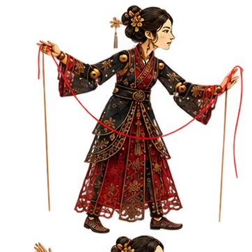
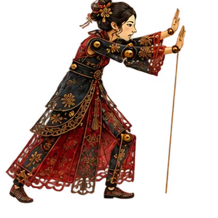
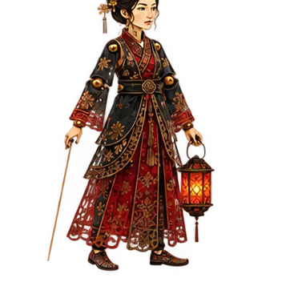

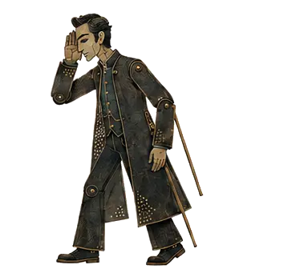
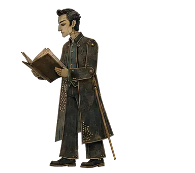
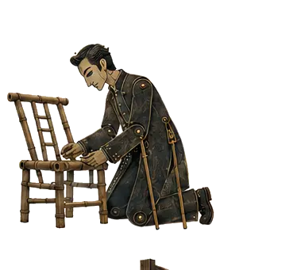
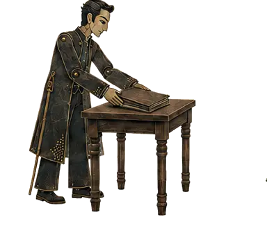
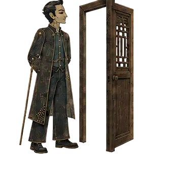
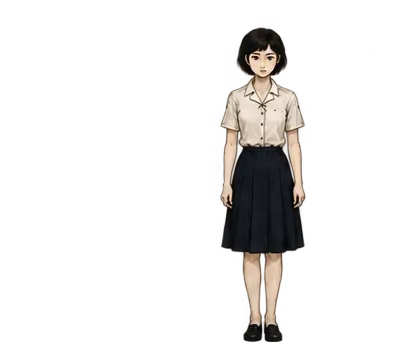
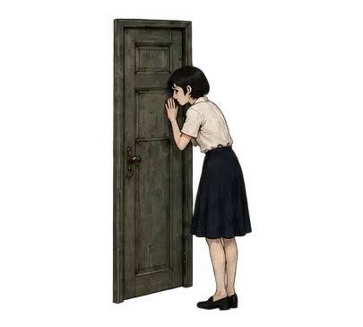
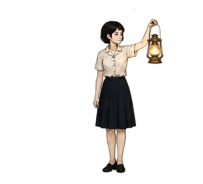
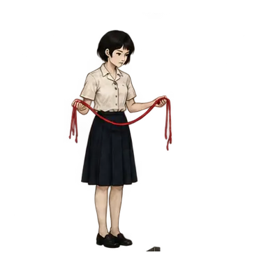
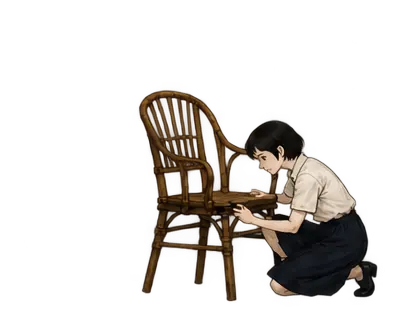
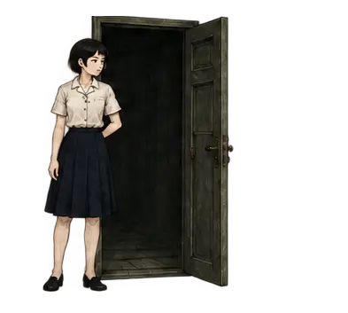
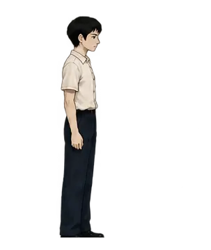
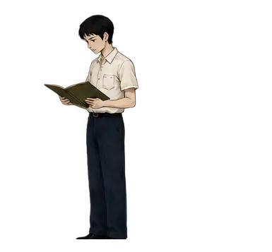
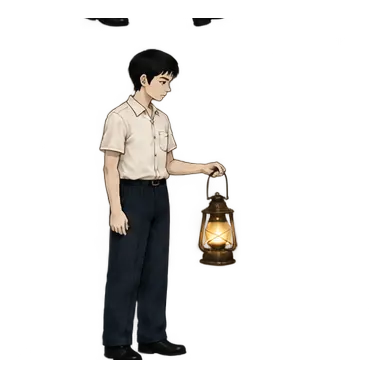
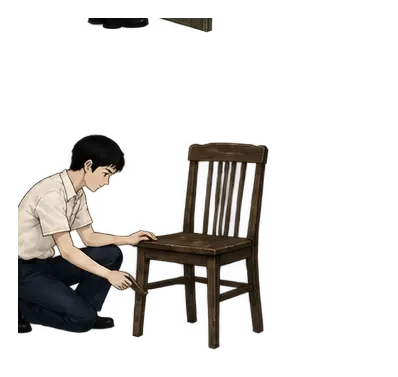
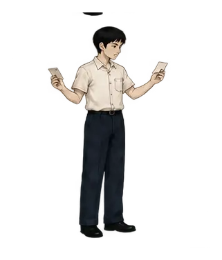
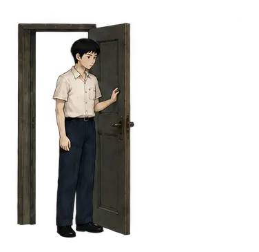
24
動畫方法
劇場服務正文，
不取代正文。
十拍動作
每場以十個姿勢與動作節拍推進，不靠單張圖反覆淡入。
可自由閱讀
可上一句、下一句、暫停、拖曳進度，或直接開啟逐字稿。
多層分鏡
前景物件、中景人物與後景空間分層移動，維持克制的觀察鏡頭。
尊重界線
不重演傷害、不追拍哀傷，且不因戲劇效果移除來源標籤。
讓下一扇門更早打開
記住他，不只是記住一場悲劇。
願下一個孩子，在傷害發生以前，就有人伸手接住。
以上號碼適用臺灣；若人在其他地區，請聯絡所在地的兒童保護、警察或緊急救護服務。通報不是司法定罪；先描述可觀察到的事實，讓專業人員評估與介入。